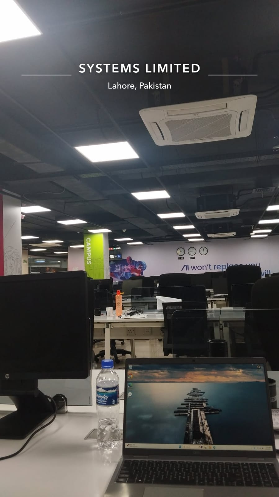
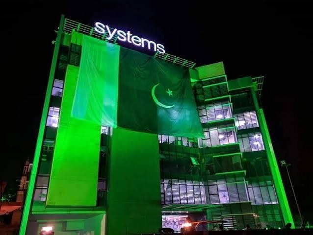
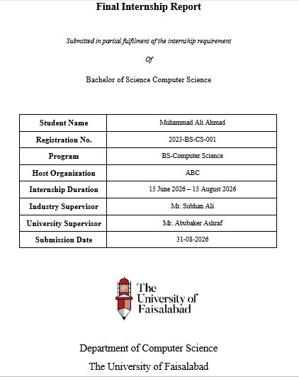
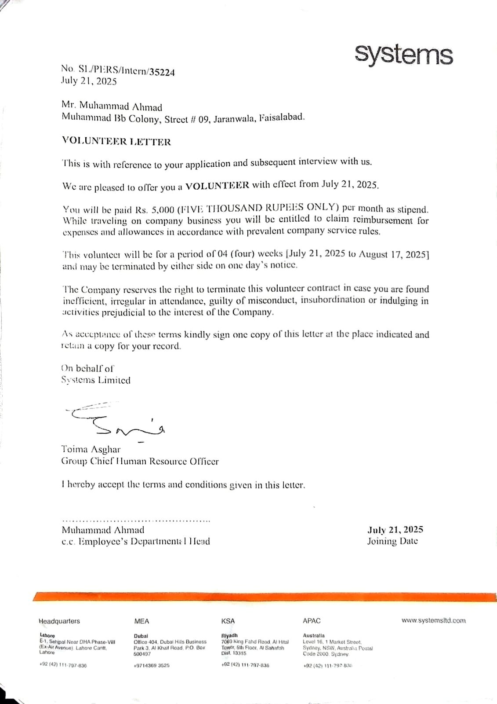
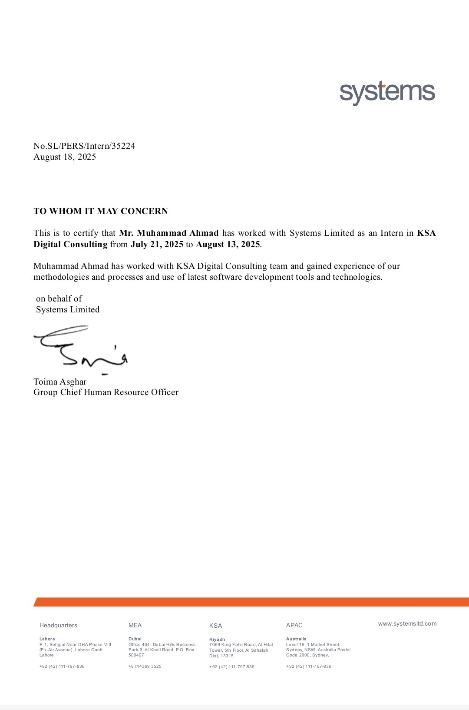
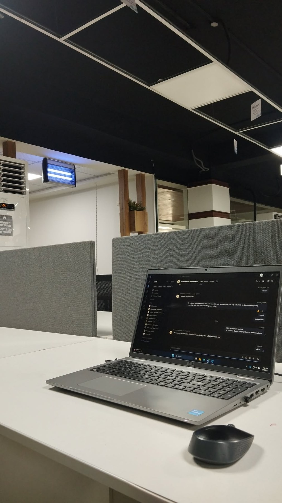
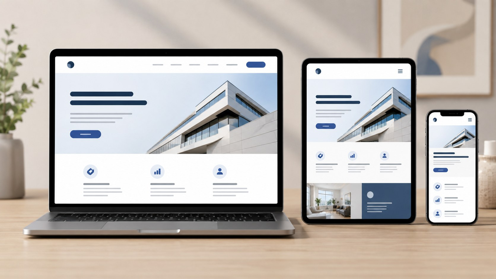
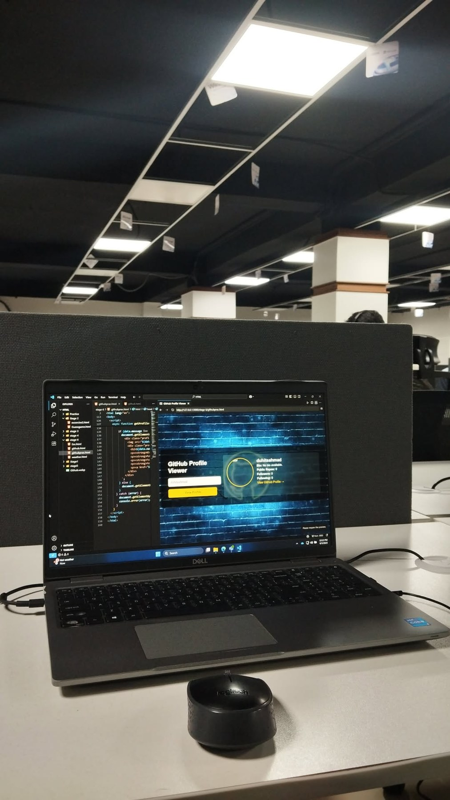
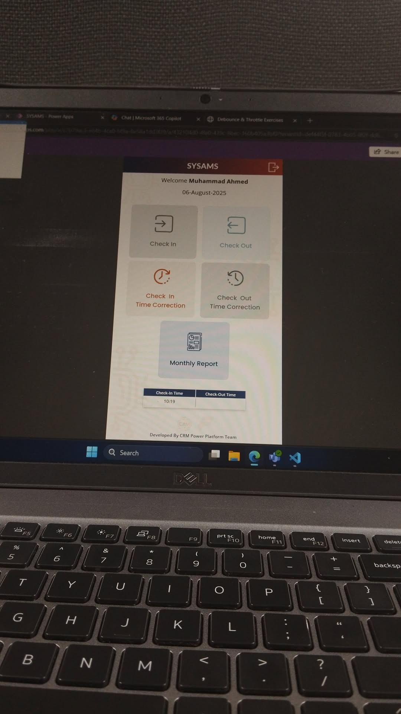
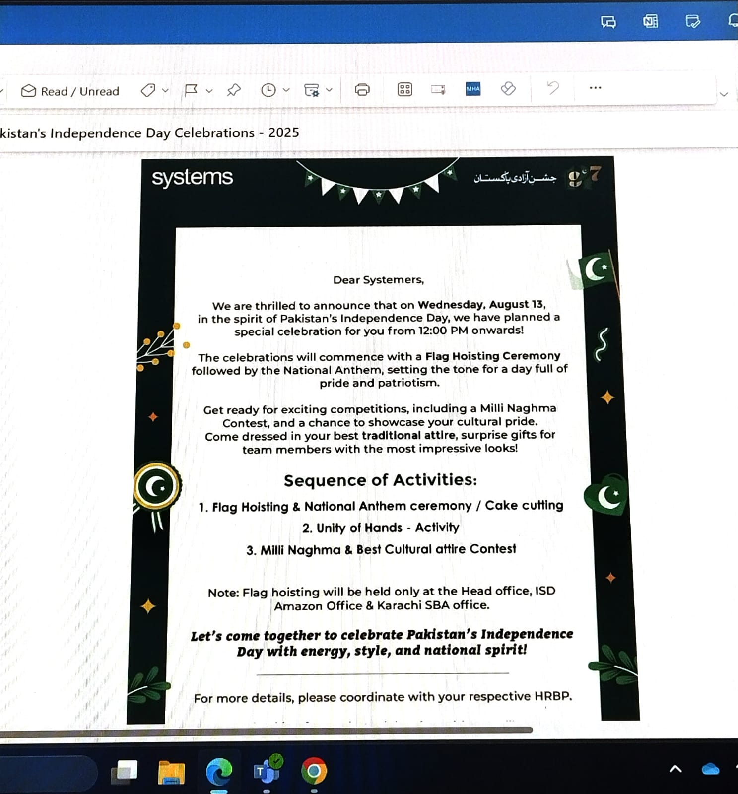

presentation mode
Systems Limited
Internship Viva
Front-End Development Internship · KSA Digital Consulting
Presented byMuhammad Ahmad
Registration No.2023-BS-CS-295
ProgramBS Computer Science

M. AhmadHTML / CSS / JavaScript
Front-EndResponsiveSystems
host organization
About Systems Limited
Systems Limited is a Pakistani global technology company known for digital transformation and enterprise technology services.
- Founded in 1977 as one of Pakistan’s pioneering IT companies.
- Provides digital consulting, cloud, data, AI, commerce and business application services.
- Works with clients across local and international markets.
- Supports sectors like banking, retail, public sector, communication and healthcare.
- My internship was linked with the KSA Digital Consulting environment.

Digital Consultingprofessional workflow · tools · teamwork
internship snapshot
Duration, Scope & Role



office experience
Learning Inside a Professional Tech Space
The workplace helped me observe communication, discipline and real digital workflows while practicing front-end tasks in a professional environment.

HTML
CSS
JS
UI
UX
WEB
tech stack
My Front-End Foundation
HTML structure
CSS design & layouts
Responsive design
Basic JavaScript
The internship scope stayed front-end only: no backend, database or advanced frameworks.
front-end workflow
From Requirement to Responsive Page
Identify content, sections and purpose.
Build semantic HTML first.
Apply CSS layout, spacing and theme.
Make it responsive for devices.
Debug and polish final output.
core learning
HTML & CSS Practice
- Created page skeletons with header, section, main and footer areas.
- Practiced links, images, lists, tables and form fields.
- Used CSS selectors, colors, typography, margins, padding and borders.
- Built layouts through Flexbox, Grid and media queries.
index.html
<section class="hero">
<h1>Front-End Project</h1>
<p>HTML + CSS + JS</p>
</section>
.hero {
display: grid;
gap: 1rem;
padding: 4rem;
}
responsive design
Designing for Every Screen
I learned that a page must remain readable, balanced and functional on laptop, tablet and mobile screens.
Fluid layoutMedia queriesReadable spacingMobile navigation
basic javascript
Small Interactions, Clear Logic
Select HTML elements.
Respond to user actions.
Handle simple checks.
Organize small actions.
JavaScript was covered only at basic level because the internship mainly focused on HTML and CSS.
practice project
Mini Front-End Project Work
I practiced a GitHub Profile Viewer style interface where structure, visual styling and basic JavaScript behavior worked together.
$ build interface
$ connect input + button
$ show profile details
$ test responsiveness


digital workplace exposure
Understanding Real Systems
- Observed digital check-in and check-out workflows.
- Understood how software supports office discipline.
- Connected interface design with real user needs.
- Experienced communication through workplace tools.
culture & communication
Professional Culture
The internship environment showed that technical learning, team communication and organizational culture are connected parts of professional development.

challenges & solutions
What I Improved
final outcomes
Skills Gained
Front-End
Foundation
Semantic HTMLCSS LayoutResponsive UIBasic JSDebuggingCommunication
Foundation
signing off
Thank You
My internship at Systems Limited helped me strengthen my front-end foundation, improve practical problem solving and understand professional workplace discipline.
I am ready for your questions.